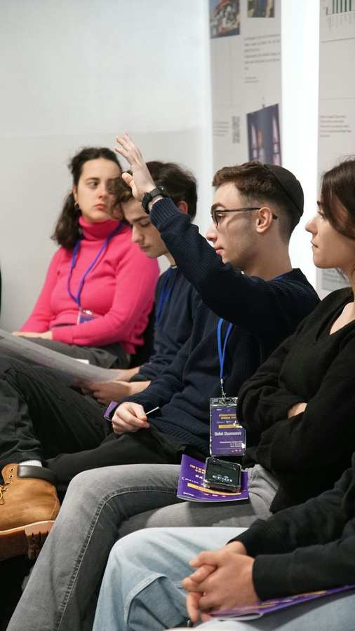

Likrat: Häufige Fragen
Auf alle Fragen gibt es eine Antwort!
Wie lange dauert es, bis ich einen Termin erhalte?
Wie lange dauert eine Begegnung?
Können zwei Schulklassen zusammengelegt werden?
Wie kann ich die Klasse bestmöglich auf die Begegnung vorbereiten?
Wie soll das Setup im Klassenzimmer sein?
Ist eine Begegnung kostenpflichtig?
Wie sage ich eine Begegnung ab?
Wie lange dauert es, bis ich einen Termin erhalte?
Wir streben danach, Ihre Anfrage so zeitnah wie möglich zu bearbeiten und werden diese innerhalb von 1 Woche beantworten. Die Terminvereinbarung erfolgt entsprechend der Verfügbarkeit.
Wie lange dauert eine Begegnung?
Eine Begegnung dauert in der Regel 50 Minuten.
Können zwei Schulklassen zusammengelegt werden?
Wir empfehlen, dass eine Likrat-Begegnung maximal 30 Teilnehmer:innen umfasst. Gerne können wir jedoch auch zwei Begegnungen parallel koordinieren.
Wie kann ich die Klasse bestmöglich auf die Begegnung vorbereiten?
Sie können einige Episoden unserer Serie She’ela auf unserem YouTube-Kanal mit Ihren Schüler:innen teilen.
Wie soll das Setup im Klassenzimmer sein?
Wir empfehlen, einen Sesselkreis vor der Begegnung vorzubereiten.
Wo treffe ich die Likratinos/as?
Die Likratinos/as werden 5 Minuten vor Beginn der Begegnung im Sekretariat auf die Lehrkraft warten.
Ist eine Begegnung kostenpflichtig?
Likrat ist ein gemeinnütziges Projekt, für das keine Kosten anfallen.
Wie sage ich eine Begegnung ab?
Sollten Sie kurzfristig eine Begegnung absagen müssen kontaktieren Sie uns am besten telefonisch unter 0153104183 oder per Email unter likrat@ikg-wien.at